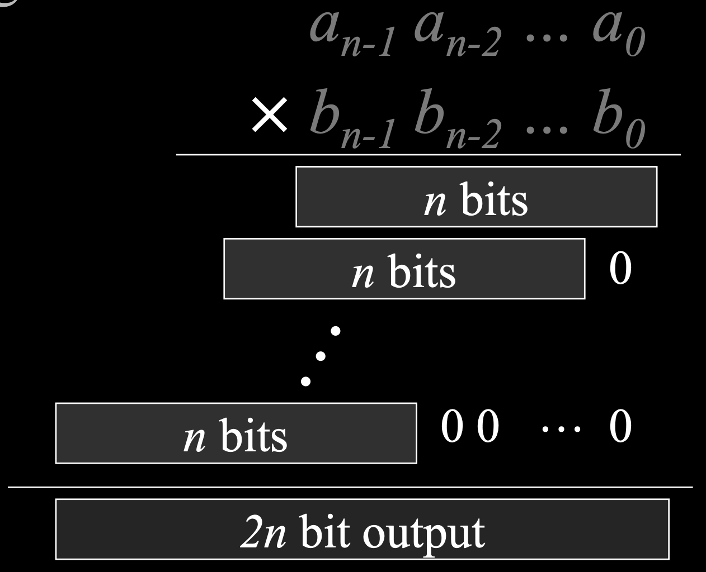

lecture #7
Given two n-bit integers, $a$ and $b$, compute their product $c = ab$.
The standard grade-school algorithm requires $\Theta(n^2)$ operations.

Let's split the n-bit integers $a$ and $b$ into two n/2-bit halves:
$a = A_1 2^{n/2} + A_0$
$b = B_1 2^{n/2} + B_0$
The product is then:
$$ ab = (A_1 B_1) 2^n + (A_1 B_0 + A_0 B_1) 2^{n/2} + (A_0 B_0) $$decimal: $20$$51$ = $20$*$10^2$ + $51$
binary: $100000$$000011$ = $100000$*$10^6$ + $000011$
$$ ab = (A_1 B_1) 2^n + (A_1 B_0 + A_0 B_1) 2^{n/2} + (A_0 B_0) $$
The formula requires four multiplications of n/2-bit integers:
This gives the recurrence $T(n) = 4T(n/2) + \Theta(n)$.
By the Master Theorem, this solves to $T(n) = \Theta(n^2)$, which is no improvement.
The middle term $(A_1 B_0 + A_0 B_1)$ can be calculated with a clever trick. We only need three total multiplications:
The middle term is then $P_3 - P_1 - P_2$.
The full product is: $P_1 2^n + (P_3 - P_1 - P_2) 2^{n/2} + P_2$.
With only three recursive multiplications of size n/2, the recurrence becomes:
$$ T(n) = 3T(n/2) + \Theta(n) $$Here, $a=3$, $b=2$. We calculate $n^{\log_b a} = n^{\log_2 3} \approx n^{1.585}$.
Using Case 1 of the Master Theorem, the solution is:
$$ T(n) = \Theta(n^{\log_2 3}) \approx \Theta(n^{1.59}) $$Input: Two $n \times n$ matrices, $A = [a_{ij}]$ and $B = [b_{ij}]$.
Output: An $n \times n$ matrix $C = [c_{ij}]$, where $C = A \cdot B$.
The standard definition for each element $c_{ij}$ is:
$$ c_{ij} = \sum_{k=1}^{n} a_{ik} \cdot b_{kj} $$The standard algorithm directly implements the definition with three nested loops.
for i from 1 to n
for j from 1 to n
c_ij = 0
for k from 1 to n
c_ij = c_ij + a_ik * b_kj
The running time is clearly $\Theta(n^3)$.
We can partition an $n \times n$ matrix into four $(n/2) \times (n/2)$ submatrices.
\[ \mathop{\left[ \begin{array}{c|c} r & s \\ \hline t & u \end{array} \right]}\limits_{\text{C}} = \mathop{\left[ \begin{array}{c|c} a & b \\ \hline c & d \end{array} \right]}\limits_{\text{A}} \cdot \mathop{\left[ \begin{array}{c|c} e & f \\ \hline g & h \end{array} \right]}\limits_{\text{B}} \]This leads to four equations:
This requires 8 recursive multiplications of $(n/2) \times (n/2)$ matrices and 4 matrix additions. Addition takes $\Theta(n^2)$ time.
The recurrence is $T(n) = 8T(n/2) + \Theta(n^2)$.
Using the Master Theorem, $T(n) = \Theta(n^3)$. No improvement!
Similar to Karatsuba's algorithm, Strassen found a way to compute the product of $2 \times 2$ matrices using only 7 recursive multiplications, instead of 8.
This comes at the cost of more additions and subtractions, but those are asymptotically cheaper.
The core of the algorithm is to compute seven product matrices, which are then combined using only addition and subtraction to form the final result. These products are:
The four submatrices of the result, C (which we called r, s, t, and u), are then calculated by adding and subtracting the seven product matrices as follows:
This method uses 7 recursive multiplications and 18 additions or subtractions to compute the final matrix product.
The new recurrence relation is:
$$ T(n) = 7T(n/2) + \Theta(n^2) $$For this recurrence, $a=7$, $b=2$. We compute $n^{\log_b a} = n^{\log_2 7} \approx n^{2.81}$.
Using Case 1 of the Master Theorem, the solution is:
$$ T(n) = \Theta(n^{\log_2 7}) \approx \Theta(n^{2.81}) $$A change in the exponent from 3 to 2.81 has a significant impact on running time for large n.
In practice, Strassen's algorithm is often faster than the standard algorithm for matrices where $n \ge 32$.
The theoretical best algorithm to date has a complexity of $\Theta(n^{2.376...})$, but it is not used in practice due to large constant factors.